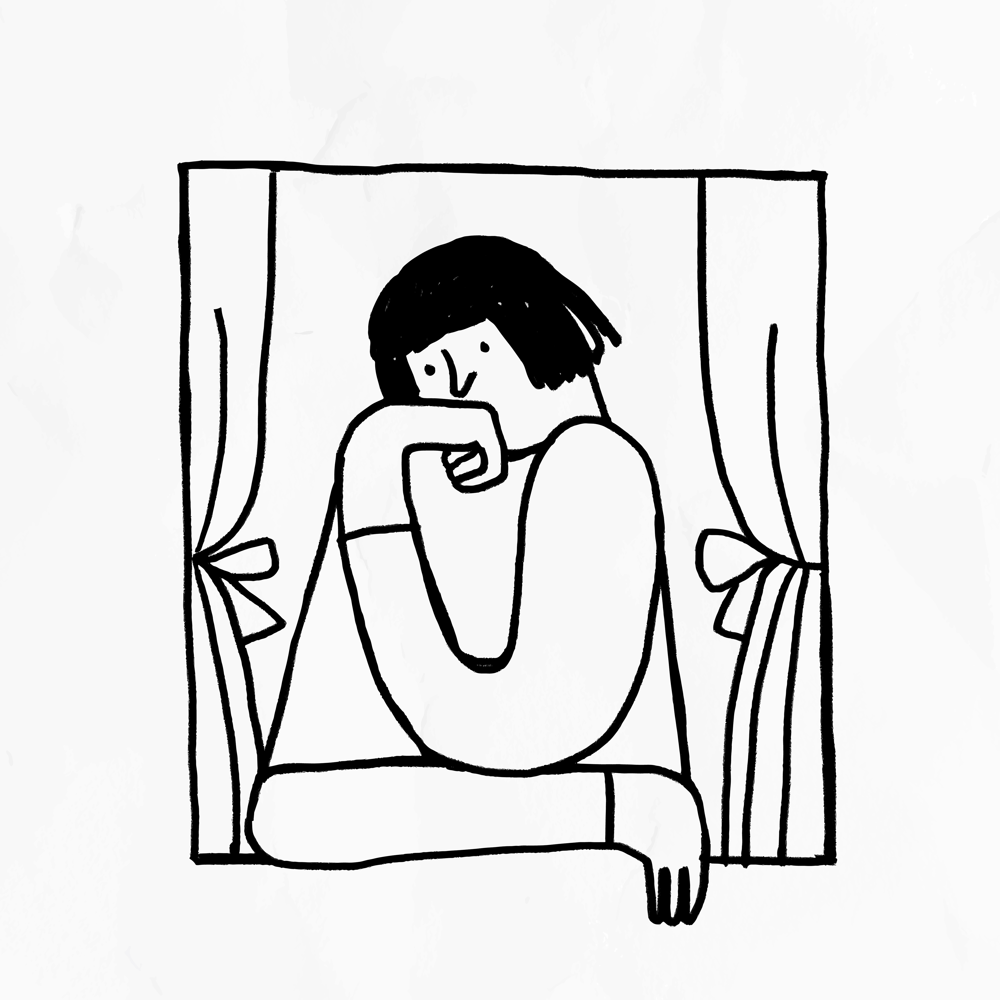

Por que procrastinamos e como superamos esse comportamento?

A procrastinação é algo com que muitas pessoas lutam, seja no trabalho, nos estudos ou nas tarefas cotidianas. Embora seja um comportamento comum, ele pode se tornar um obstáculo significativo para o alcance de metas e o aumento da produtividade.
Mas afinal, por que procrastinamos?
Compreender as causas dessa tendência é o primeiro passo para superá-la e retomar o controle da sua agenda.
Medo do Fracasso
O medo de não conseguir realizar uma tarefa de forma perfeita é uma das principais razões para procrastinar. Quando sentimos que não seremos capazes de atingir o padrão ideal, o impulso é adiar a tarefa, evitando o desconforto do fracasso. Esse ciclo pode se perpetuar, já que a evitação não resolve a insegurança, mas apenas adia a tarefa.
Falta de Motivação
Quando a tarefa parece sem sentido ou irrelevante, é fácil deixá-la de lado. A falta de motivação, muitas vezes ligada à sensação de que a tarefa não é interessante ou importante, cria uma resistência interna, o que leva ao adiamento constante. Isso é particularmente comum em atividades que exigem esforço, mas não oferecem recompensas imediatas.
Perfeccionismo
O perfeccionismo está diretamente relacionado à procrastinação. A busca incessante pela perfeição pode paralisar a ação. Quando o indivíduo sente que a tarefa precisa ser executada de forma impecável, ele pode adiar seu início, temendo que os resultados não correspondam à expectativa. Nesse cenário, o medo de não ser perfeito impede qualquer avanço.
Falta de Planejamento
A procrastinação também pode ser resultado da falta de um plano estruturado. Quando não há um roteiro claro para seguir, fica mais fácil se sentir perdido ou sobrecarregado. Sem saber por onde começar, as tarefas acabam sendo adiadas. A ausência de um plano de ação pode fazer qualquer desafio parecer ainda maior do que realmente é.
Distrações
Com o aumento das distrações digitais, como redes sociais, notificações de smartphones e ambientes de trabalho tumultuados, manter o foco tornou-se uma tarefa cada vez mais difícil. Essas distrações constantes diminuem a produtividade, tornando fácil adiar o que precisa ser feito, já que algo sempre parece mais interessante ou urgente.
Como Superar a Procrastinação?
Estabeleça Metas Claras e Realistas
Um dos primeiros passos para combater a procrastinação é definir metas claras e alcançáveis. Quando as tarefas são divididas em etapas menores, elas se tornam mais gerenciáveis e menos intimidadoras. Além disso, a clareza sobre o que precisa ser feito ajuda a reduzir a ansiedade e aumenta a sensação de controle.
Priorize Suas Tarefas
Nem todas as tarefas têm a mesma urgência. Ao utilizar técnicas como a Matriz de Eisenhower, que ajuda a distinguir o que é urgente e importante, você pode focar no que realmente precisa ser feito. Identificar suas prioridades ajuda a evitar que você se perca em atividades menos relevantes, que apenas consomem seu tempo.
Elimine as Distrações
Criar um ambiente de trabalho livre de distrações é essencial. Coloque o celular no modo silencioso, bloqueie sites que roubam sua atenção e encontre um local tranquilo para se concentrar. Quanto menos distrações, maior será sua capacidade de foco e produtividade.
Use Técnicas de Gestão do Tempo
Técnicas como o método Pomodoro podem ser extremamente eficazes. Esse método consiste em trabalhar por períodos curtos (geralmente 25 minutos), seguidos de uma pequena pausa. Isso ajuda a manter a mente focada e impede que o trabalho se torne cansativo ou sobrecarregue sua capacidade de concentração.
Recompense-se pelo Progresso
Uma maneira poderosa de combater a procrastinação é recompensar-se por cada tarefa concluída. Estabeleça pequenas recompensas para quando atingir suas metas, como uma pausa para um café ou tempo livre para uma atividade prazerosa. Esse incentivo pode manter sua motivação alta e transformar o processo de trabalho em algo mais gratificante.
A procrastinação é um comportamento desafiador, mas não é impossível de superar. Compreender as causas que levam ao adiamento e implementar estratégias práticas e eficazes pode transformar sua produtividade e ajudar a alcançar seus objetivos. Não deixe para amanhã o que você pode começar hoje. O primeiro passo para vencer a procrastinação é agir agora!